Brain image morphometry is almost universally restricted to computing volumes and thicknesses of brain regions. To better characterize the anatomy and shapes of brains, I oversaw the construction of a new brain labeling protocol, the world's largest manually labeled set of brain images, and the open source mindboggle software for automated brain feature extraction, labeling, and shape analysis. I also helped develop a new method called "concurrence topology" for analyzing high-order relationships in temporal data (such as functional brain imaging data) using persistence homology. While developing these methods, I needed to know which preprocessing approaches to choose, which led me to conduct the largest registration and brain extraction evaluation studies ever conducted.
Brain image analysis
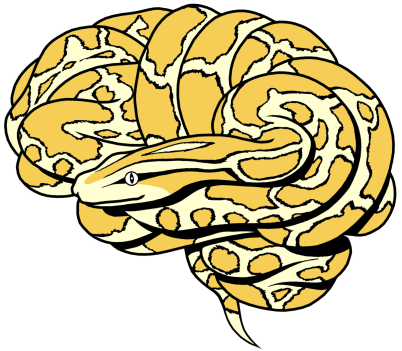
Mindboggle brain image analysis software
Mindboggle (mindboggle.info) is open-source software for the analysis (feature extraction, labeling, and morphometry) of human brain imaging data. Features include anatomical regions (like gyri and subcortical regions), sulcal folds, and fundus curves. Shape measures include two types of depth, two types of curvature, volume, thickness, Zernike moments, Laplace-Beltrami spectra, etc. The project has been funded by three NIH grants, and is maintained by the Computational Neuroimaging Lab at the Child Mind Institute.
Publications
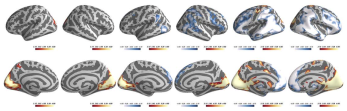
J Son, L Ai, R Lim, T Xu, S Colcombe, AR Franco, J Cloud, S LaConte, J Lisinski, A Klein, RC Craddock. Evaluating fMRI-based estimation of eye gaze during naturalistic viewing. Cerebral Cortex, 30(3), pp.1171-1184 (2020). doi:10.1093/cercor/bhz157
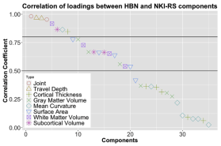
Y Zhao, A Klein, FX Castellanos, MP Milham. Brain age prediction: cortical and subcortical shape covariation in the developing human brain. NeuroImage 202: 116149 (2019). doi:10.1016/j.neuroimage.2019.116149
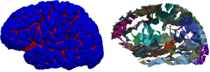
A Klein, SS Ghosh, FS Bao, J Giard, Y Hame, E Stavsky, N Lee, B Rossa, M Reuter, EC Neto, A Keshavan. Mindboggling morphometry of human brains. PLoS Computational Biology 13(3): e1005350 (2017). doi:10.1371/journal.pcbi.1005350
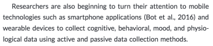
MP Milham, RC Craddock, A Klein. Clinically useful brain imaging for neuropsychiatry: How can we get there? Depression and Anxiety 2017:1-10 (2017). doi:10.1002/da.22627
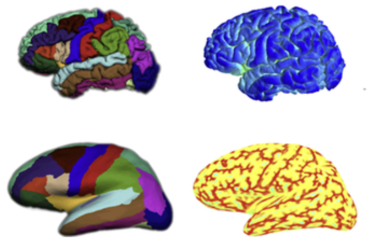
GI Allen, N Amoroso, C Anghel, V Balagurusamy, CJ Bare, D Beaton, R Bellotti, DA Bennett, K Boehme, PC Boutros, L Caberlotto, C Caloian, F Campbell, E Chaibub Neto, Y-C Chang, B Chen, C-Y Chen, T-Y Chien, T Clark, S Das, C Davatzikos, J Deng, D Dillenberger, RJB Dobson, Q Dong, J Doshi, D Duma,… A Klein, … X Zhan, Y Zhou, F Zhu, H Zhu, S Zhu, Alzheimer's Disease Neuroimaging Initiative. Crowdsourced estimation of cognitive decline and resilience in Alzheimer's disease. Alzheimer's & Dementia 12(6): 645-653 (2016). PMID: 27079753. doi:10.1016/j.jalz.2016.02.006
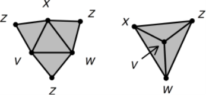
SP Ellis, A Klein. Describing high-order statistical dependence using "Concurrence topology", with application to functional MRI brain data. Homology, Homotopy and Applications. 16(1): 245-264 (2014). doi:10.4310/HHA.2014.v16.n1.a14
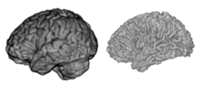
TJ Tustison, PA Cook, A Klein, G Song, SR Das, JT Duda, BM Kandel, N van Strien, JR Stone, JC Gee, BB Avants. Large-scale evaluation of ANTs and FreeSurfer cortical thickness measurements. NeuroImage. 99:166-179 (2014). doi:10.1016/j.neuroimage.2014.05.044
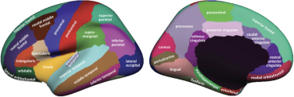
A Klein, J Tourville. 101 labeled brain images and a consistent human cortical labeling protocol. Frontiers in Brain Imaging Methods. 6:171 (2012). doi:10.3389/fnins.2012.00171. Data.
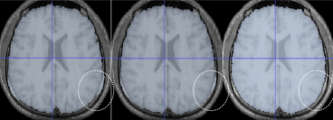
BB Avants, NJ Tustison, G Song, PA Cook, A Klein, JC Gee. A reproducible evaluation of ANTs similarity metric performance in brain image registration. NeuroImage. 54(3): 2033-2044 (2011). PMCID: PMC3065962.
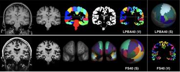
A Klein, SS Ghosh, B Avants, BTT Yeo, B Fischl, B Ardekani, JC Gee, JJ Mann, RV Parsey. Evaluation of volume-based and surface-based brain image registration methods. NeuroImage. 51: 214-220 (2010). PMCID: PMC2862732.
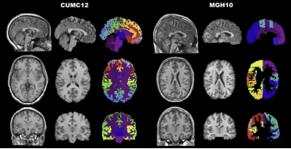
A Klein, J Andersson, BA Ardekani, J Ashburner, B Avants, M-C Chiang, GE Christensen, DL Collins, J Gee, P Hellier, JH Song, M Jenkinson, C Lepage, D Rueckert, P Thompson, T Vercauteren, RP Woods, JJ Mann, RV Parsey. Evaluation of 14 nonlinear deformation algorithms applied to human brain MRI registration. NeuroImage. 46(3): 786-802 (2009). PMCID: PMC2747506. Data.
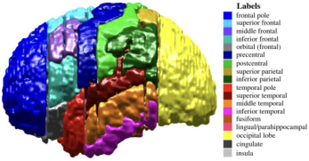
A Klein, B Mensh, S Ghosh, J Tourville, J Hirsch. Mindboggle: Automated brain labeling with multiple atlases. BMC Medical Imaging. 5:7 (2005). PMCID: PMC1283974
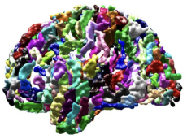
A Klein, J Hirsch. Mindboggle: A scatterbrained approach to automate brain labeling. NeuroImage. 24(2): 261-280 (2005). PMID: 15627570
Proceedings and proposals
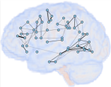
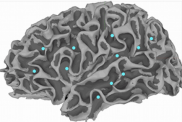
A Klein, S Ghosh. Graph-based clinical diagnosis and prediction using multi-modal neuroimaging data (NIH proposal). Research Ideas and Outcomes. 2: e8835 (2016). doi:10.3897/rio.2.e8835
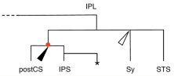
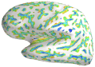
A Klein. Brain Graph Interface (NIH proposal). Research Ideas and Outcomes. 2: e8817 (2016). doi:10.3897/rio.2.e8817
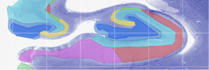
A Klein. A game for crowdsourcing the segmentation of BigBrain data (NIH proposal). Research Ideas and Outcomes. 2: e8816 (2016). doi:10.3897/rio.2.e8816
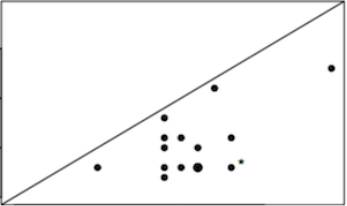
A Klein, SP Ellis. Concurrence topology: Finding high-order dependence in neuropsychiatric data (NIH proposal). Research Ideas and Outcomes. 2: e8815 (2016). doi:10.3897/rio.2.e8815
SP Ellis, A Klein. "Concurrence topology:" A new method for describing high-order statistical dependence in data. 31st International Symposium on Computational Geometry (Eindhover, the Netherlands) (2015).
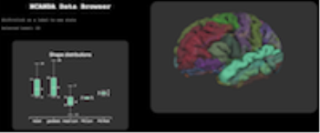
BN Nichols, JB Poline, RA Poldrack, A Klein, D Kwon, W Chu, KM Pohl. Implementing Semantics-Driven Data Exchange in Brain Science: The NCANDA Case Study. Big Data to Knowledge All Hands Grantee Meeting (2015). National Institutes of Health, Bethesda, MD.
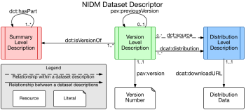
DB Keator, J Poline, BN Nichols, SS Ghosh, C Maumet, KJ Gorgolewski, T Auer, C Craddock, G Chen, G Flandin, YO Halchenko, M Hanke, C Haselgrove, K Helmer, M Jenkinson, A Klein, L Lanyon, D Marcus, D Margulies, F Michel, TE Nichols, RA Poldrack, R Reynolds, Z Saad, T Schmah, J Steffener, JA Turner, JD Van Horn, S Das, DN Kennedy. Standardizing metadata in brain imaging. Neuroinformatics 2015. doi:10.3389/conf.fnins.2015.91.00004
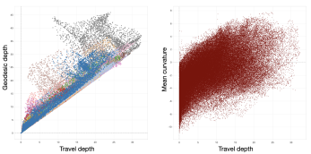
A Klein, EC Neto, S Ghosh, ADNI. Detailed shape analysis of healthy brains and brains with Alzheimer's disease. Human Brain Mapping 2015 (Honolulu, Hawaii).